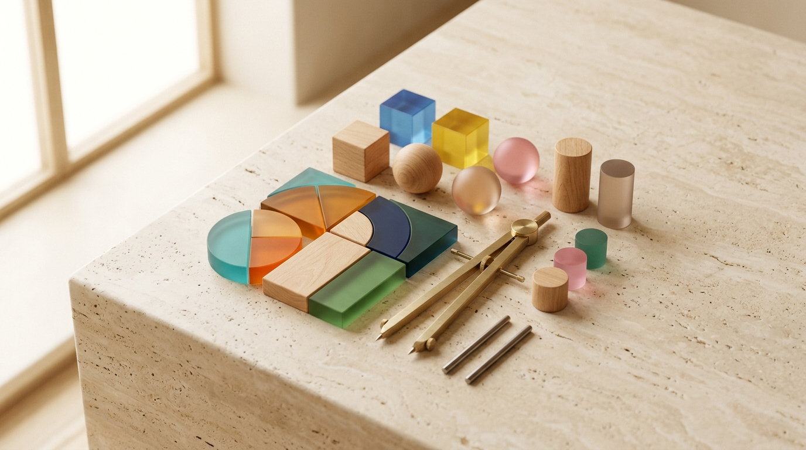

Confidence with Numbers
& Your Career Gateway
Exploring how we feel about maths, busting old school myths, and unlocking free 1-to-1 Functional Skills in Maths, English & Digital.
→ Next · F Fullscreen · O Overview
How do you feel about maths?
Imagine being asked to do a calculation out loud right now. Pick or type one word — let's plot the room.
CLICK A WORD OR TYPE YOUR OWN:
You are not alone
Listen to how people across all walks of life describe that instant reaction to numbers — and where it really comes from.
What is Maths Anxiety?
“The panic, helplessness, paralysis, and mental disorganisation that arises among some people when they are required to solve a mathematical problem.”
— Tobias & Weissbrod (1980) · University of Cambridge research
Value, Belief & Persistence
02 · THE ESSENTIALS OF NUMERACY
03 · VALUE, BELIEF AND PERSISTENCE
The Myth Buster
Unlock Your Next Step
Level 2 Functional Skills = GCSE Grade C / 4 equivalent, with free 1-to-1 online tuition around your shifts.
Requires Functional Skills Maths & English Level 2 (or GCSE). Free 1-to-1 coaching gets you exam-ready at Unipart or from home.
Functional Skills Maths
Level 1 & Level 2 qualifications taught visually — zero squinting, zero jargon, built around real healthcare & everyday numbers.

Find 75% of 80 ml:
Split into 4 equal quarters (20 ml each). Highlight 3!
20 + 20 + 20 = 60 ml ✓
0.75 × 80 = (75/100) × 80 = (3/4) × 80 = 240 ÷ 4 = 60...
No wonder people switched off at school! We make it visual.
Functional Skills English
Reading, Writing, and Speaking & Listening (Level 1 & Level 2) — building confidence for clinical notes, reports, and career applications.
Clear, Structured & Exam-Ready:
“Following the morning handover, the patient reported mild dizziness at 09:30. Observations were recorded and escalated to the duty nurse.”
Unclear & Stressful:
“pt felt dizzy after handover told nurse obs done”
Digital Functional Skills
Entry 3 & Level 1 digital confidence — practical, everyday NHS tech skills, currently being trialled right now at Oxford Health.
The 10-Minute Quick Check
Completely free, confidential, and mobile-friendly. 20 everyday questions — no pass or fail, just your personal starting point.
Scan, Check & Get Started
National Numeracy Challenge
nationalnumeracy.org.uk/challenge/oxhealthcamp
Functional Skills Sign-Up
Maths · English · Digital (Trust Trial)
Free, shift-friendly 1-to-1 online tuition with Abdul & Taniya. Free exams at Unipart or home.
Main Admin Email (Click to Copy):